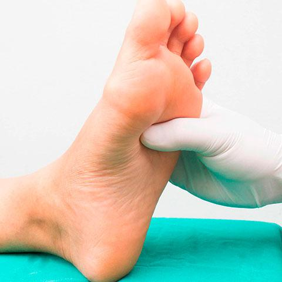
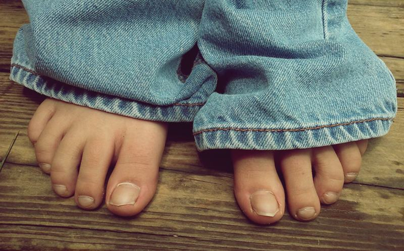
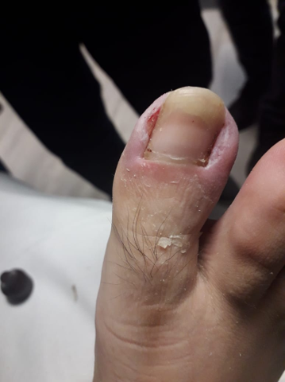
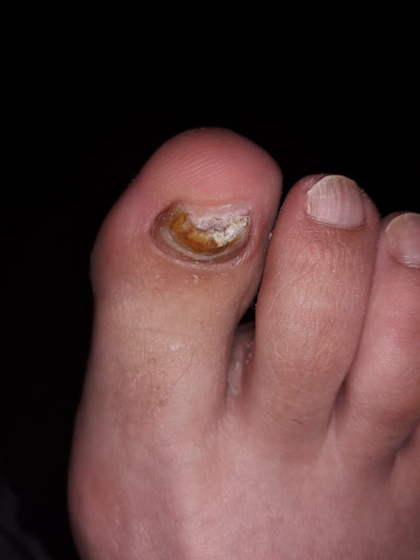
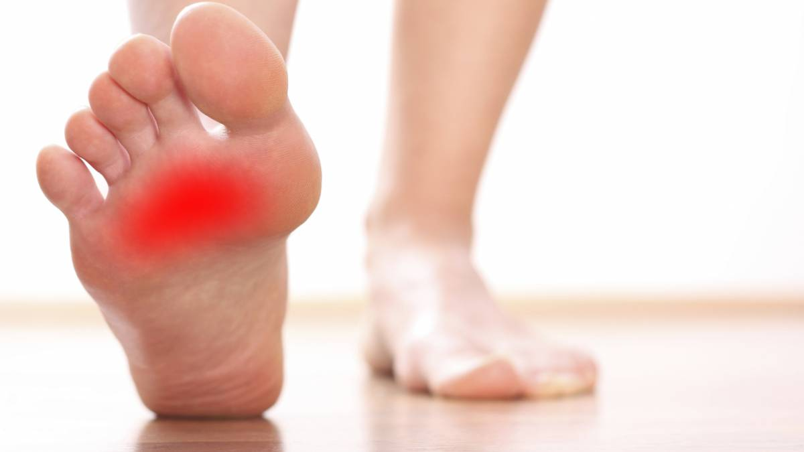
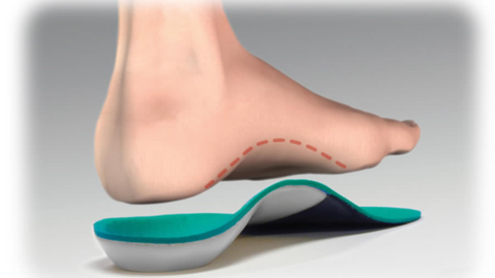
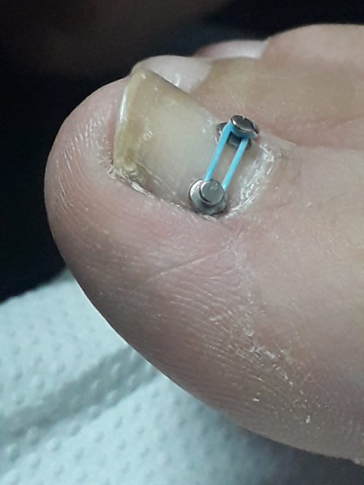

Podología Clínica a Domicilio
PODOLOGÍA A DOMICILIO
________________________________________________
-  •CORTE CORRECTO DE UÑAS.
- •ONICOCRIPTOSIS ( UÑA INCARNADA).
- •TRATAMIENTO DE ONICOMICOSIS (HONGOS).
- •REMOCION DE QUERATOSIS ( HELOMAS, DUREZAS).
- •PIE DIABETICO.
- •PLANTILLAS ORTOPEDICAS.
- •BRAQUETS.
- •MASOTERAPIA.
________________________________________________
"Un pie sano, para caminar feliz"

"Un pie sano, para caminar feliz"
Servicio en donde se atiende de manera confiable , segura, y por sobre todo en la comodidad de su hogar, donde nosotros llevamos nuestra experiencia y profesionalismo a su domicilio.
__________________________________________________________________________________________________________________________________________________________________________________
Misión:
Nuestra misión , es proporcionar una atención de excelencia, concreta y especializada , realizando tratamientos adecuados , poniendo en practica nuestros conocimientos , para mejorar la calidad de vida de la comunidad.
_________________________________________________________________________________________________________________________________________________________________________________
Visión:
Ser reconocidos como la mejor alternativa en atención, perfeccionando e investigando nuevas técnicas y procedimientos que sean pioneros en mejorar las experiencias de los pacientes.

CORTE CORRECTO
DE UÑAS
Es vital poner atención al corte de uñas a cualquier edad, tanto infantil, adulta o avanzada.
Cada etapa de la vida va a conllevar diferentes cambios en las uñas y con ello, diferentes cuidados y necesidades.
Para ello en cada atención nuestra misión es educar y prevenir cualquier alteración a la lamina Unguial.

ONICOCRIPTOSIS ( UÑA INCARNADA)
La uña incarnada u onicocriptosis (también llamada erróneamente uña "encarnada") es una afección que aparece cuando un borde de la uña del pie penetra la piel del dedo produciendo dolor, enrojecimiento e inflamación, ya que actúa como si de un cuerpo extraño se tratase.
Esta patología afecta comúnmente al dedo gordo, pero se puede presentar en cualquiera de ellos.

TRATAMIENTO DE ONICOMICOSIS (HONGOS)
La onicomicosis es una infección por hongos y se trata de la enfermedad que más frecuentemente puede afectar a las uñas de los humanos, siendo responsable de más de la mitad de los casos de alteración ungueal. La onicomicosis es un proceso frecuentemente asintomático, aunque en ocasiones puede producir molestias o dolor, especialmente en el momento de recortarse las uñas o realizar ejercicio físico
Es muy importante diagnosticar la onicomicosis y realizar un tratamiento de eliminación en la mayor brevedad. Existen varias formas de tratamiento y eliminación de los hongos de las uñas.

REMOCION DE
QUERATOSIS
( HELOMAS, DUREZAS)
Nuestro servicio de remoción de Hiperqueratosis es un tratamiento podológico que consiste en la eliminación de callosidades, deslaminando capa por capa y pulido con micromotor, para terminar con una suave y reconfortante hidratación.
PIE DIABETICO
El pie diabético es una alteración clínica que se produce por mantener unos niveles de glucosa más elevados de lo habitual. Se caracteriza por:
Una disminución de la sensibilidad en el pie (neuropatía).
Una disminución de la circulación de la sangre (isquemia).
Ambos factores pueden predisponer la aparición de una ulceración en el pie.
En pacientes con diabetes, una pequeña herida a la que podríamos no darle importancia puede ser el punto de partida de una posible infección. Por ello, te aconsejamos que acudas al podólogo si es necesario para evitar este tipo de problemas. Puede parecer algo banal pero no lo es.

PLANTILLAS ORTOPEDICAS
La función principal de una plantilla ortopédica es la distribución de presiones plantares de forma que evite exceso de carga sobre los tejidos del pie.
Para ello realizamos un estudio Biomecánico y Pedigrafico para confeccionar plantillas con materiales cómodos y de alta calidad.

BRACKETS
Brackets para las uñas de los dedos de los pies, específicamente para tratar o evitar las uñas Incarnadas, es un sistema que va a en constante crecimiento.
Expertos señalan que este llamativo método es muy efectivo para tratar a las personas que sufren los dolores de una uña Incarnada y apuntan a evitar otros problemas relacionados a los pies como: sobrepeso, hiperhidrosis, Diabetes Mellitus y más.
.jpg)
MASOTERAPIA
Es una terapia manual que utiliza diferentes técnicas de masaje para el tratamiento de los pies. El procedimiento se aplica a los tejidos blandos: piel, músculo y tejido conjuntivo; para mejorar su función, activar la circulación, promover la relajación y el bienestar general.Los músculos y los ligamentos son los encargados de mantener la estructura ósea del pie, en su correcta posición y funcionamiento. Si mantenemos el pie en una posición forzada o lo sometemos a esfuerzos extremos, provocamos una atrofia en el músculo Y , por tanto, la deformación de la estructura plantar y la acumulación de ácido láctico, responsable principal del cansancio y del dolor.
.jpg)
.jpg)
.jpg)
.jpeg)
.jpeg)
.jpeg)